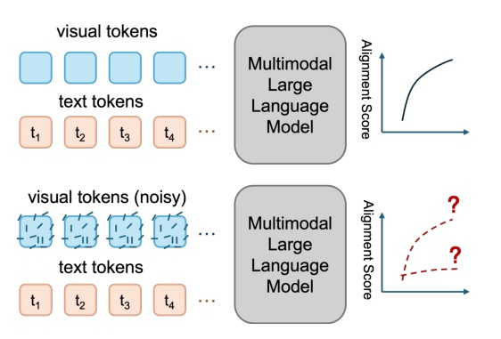
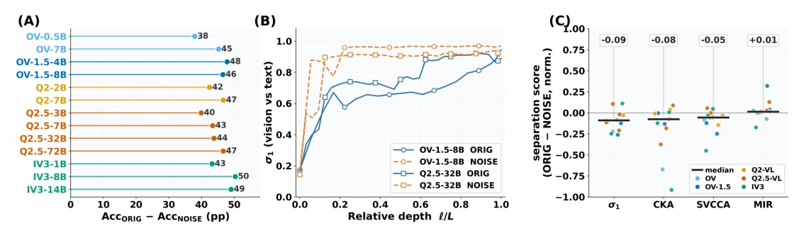
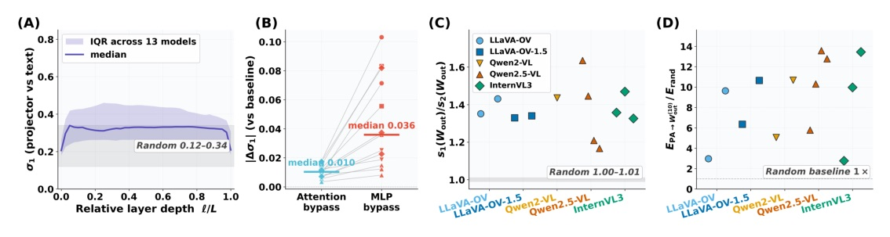
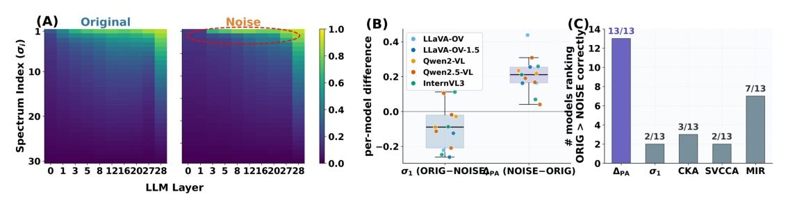
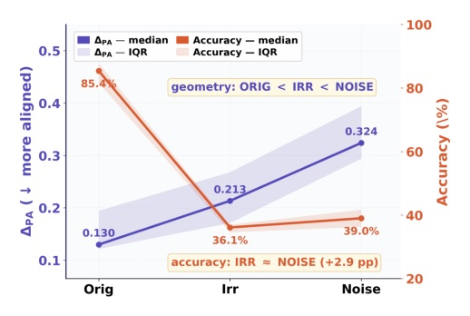
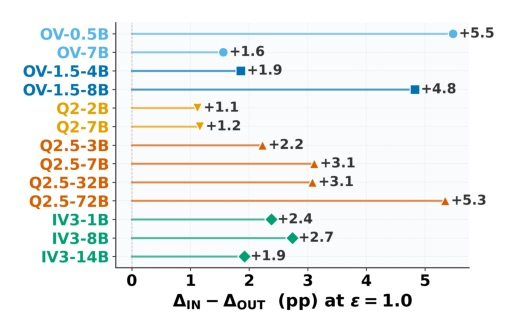
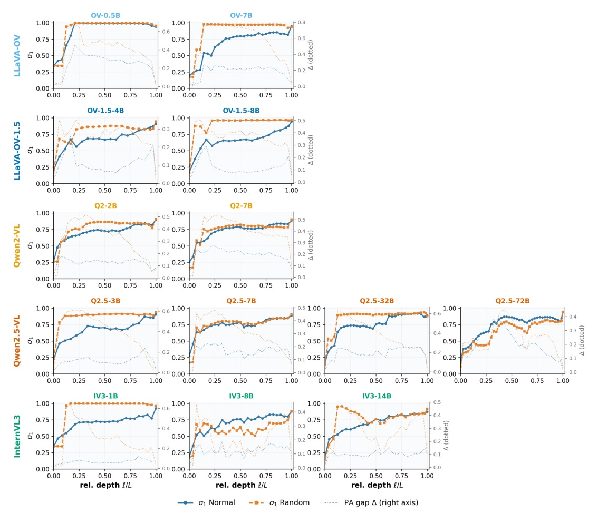
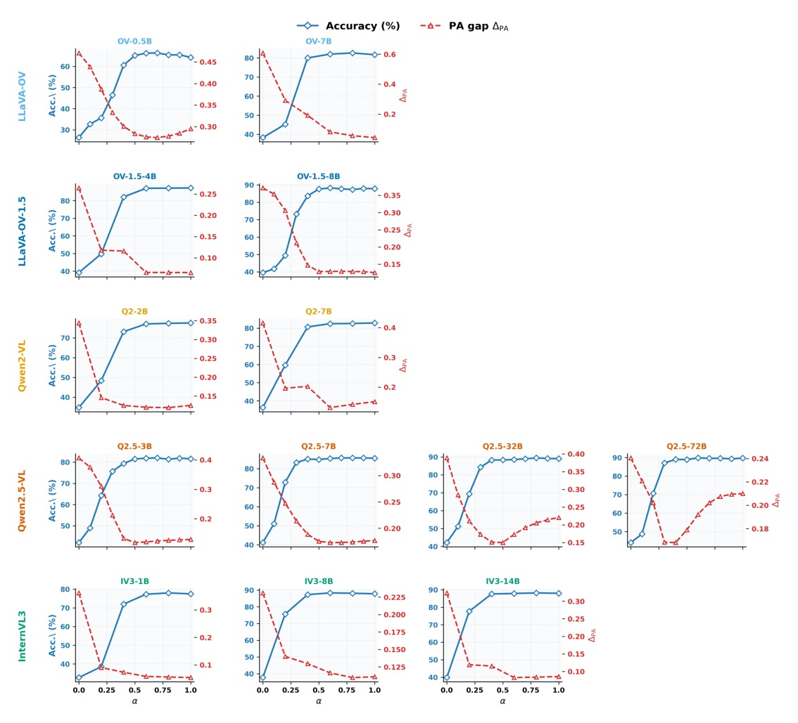

Why high visual-text similarity can survive after the image content is gone.
High internal alignment is not proof that an MLLM uses the image.
A scalar score collapses both sources into one number.



A shared anisotropic down-projection pulls both modalities toward the same dominant output direction.

| Metric | Mean abs r | Median abs r | abs r > .80 | Sign-consistent |
|---|---|---|---|---|
| sigma1 | 0.730 | 0.765 | 5/13 | 4/13 |
| CKA | 0.752 | 0.765 | 6/13 | 4/13 |
| MIR | 0.760 | 0.777 | 4/13 | 11/13 |
| PA gap | 0.894 | 0.917 | 12/13 | 13/13 |


| Setting | PA gap | Median accuracy | Interpretation |
|---|---|---|---|
| ORIG | 0.130 | 85.4% | Relevant structured image |
| IRR | 0.213 | 36.1% | Structured but irrelevant |
| NOISE | 0.324 | 39.0% | Mostly one-direction collapse |
PA gap is a diagnostic of visual-stream geometry, not a certificate of task-relevant multimodal reasoning.
A high internal alignment score is not, by itself, evidence that an MLLM uses the image to answer the question.
高的內部對齊分數，本身不能證明 MLLM 真有用影像回答問題。§1 p.2
A shared W can inflate downstream alignment scores without any content-level coupling between the two inputs.
共享投影 W 能在兩個輸入沒有內容層耦合時，仍抬高下游對齊分數。§3.2 pp.5–6


Internal alignment and task performance should therefore be reported together, but not read as the same kind of evidence.
內部對齊與任務表現應一起報告，但不能把它們當作同一種證據。§4.3 p.9
NeurIPS 2026 accepted · arXiv:2609.30210v1 · source PDF: 26 pages
It is: what geometry produced it, and does controlled task evidence say it matters?